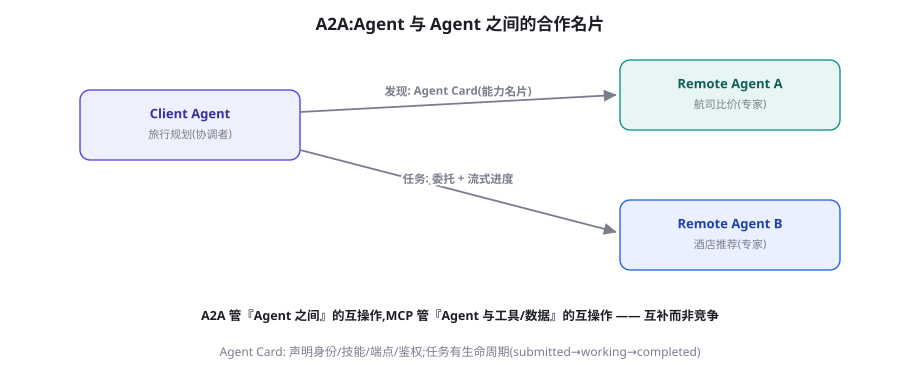

Agent 互操作协议：A2A、AG-UI 与开放生态
MCP 解决「Agent 与工具」，这一章讲剩下两块拼图：Agent 与 Agent（A2A）、Agent 与用户界面（AG-UI）。三者合体，才是 Agent 互联网的完整协议栈。本章讲清各协议的分工、协作模型与落地路径。
协议栈全景：三层互操作各司其职
2025 年之后，Agent 互操作的协议版图逐渐清晰为三层，各管一段「关系」：
| 关系 | 协议 | 发起方 | 核心抽象 |
|---|---|---|---|
| Agent ↔ 工具/数据 | MCP（第 36 章） | Anthropic，2024-11 | Tools / Resources / Prompts / Sampling |
| Agent ↔ Agent | A2A（Agent2Agent） | Google，2025-04；后捐给 Linux 基金会 | Agent Card / Task / Message / Artifact |
| Agent ↔ 用户界面 | AG-UI | CopilotKit 生态，2025 | 16 类标准事件（流式状态同步） |
A2A 核心：把 Agent 变成「可发现的服务」
A2A（Agent2Agent）要解决的问题：你的 Agent 需要「外请专家」时，如何发现、验证、委托另一个可能是别人家、别的框架、别的厂商的 Agent？它给出的核心抽象有四件：Agent Card（名片）——每个 A2A Server 在约定路径（/.well-known/agent.json）公开一张 JSON 名片：我是谁、能做什么（技能列表）、端点在哪、需要什么鉴权、支持哪些输入输出模式；Task（任务）——委托的最小单元，带完整生命周期（submitted → working → input-required → completed/failed/canceled）；Message 与 Artifact（消息与产物）——协作过程的通信与最终交付物（文件、结构化数据）。整个设计与微服务世界的「服务发现 + 异步任务」高度同构——这不是巧合：A2A 的本质就是「把 Agent 当作一种新的网络服务类型来治理」。

A2A 的四个设计原则（以及它们为什么重要）
- 不透明性（Opaque agents）：Agent 之间只交换声明的能力与任务通信，不暴露内部思考、记忆与工具。为什么重要：这既是商业保护（你的 Agent 内部实现是 IP），也是安全边界（内部状态不外泄），还是简单性的来源（协作界面只有一层）。
- 基于既有标准：HTTP、JSON-RPC、SSE——不发明新传输层。为什么重要：基础设施（鉴权、网关、监控、负载均衡）全部现成，落地成本骤降。
- 默认长任务友好：任务生命周期天然支持「小时级」异步工作（webhook 回调 + SSE 流式进度），而非假设「一问一答」。为什么重要：Agent 的真实任务经常很长，为短任务设计的 RPC 会在这里翻车（第 80 章的异步化原则被写进了协议）。
- 模态开放：不只文本——名片声明支持的视频/音频/表单等模态，协作时按需协商。为什么重要：为多模态 Agent 时代（第 7 部分）预留了轨道。
import httpx
async def delegate_flight_search(client_agent, query: str):
# ① 发现: 读名片(通常由目录/注册中心提供 URL)
card = (await httpx.get(
"https://flights.example.com/.well-known/agent.json")).json()
skill = next(s for s in card["skills"]
if "机票比价" in s["name"]) # ② 能力匹配
# ③ 委托任务(异步,生命周期可追踪)
task = await a2a_send(card["endpoint"], {
"role": "user",
"parts": [{"type": "text", "text": query}]})
while task["status"]["state"] in ("submitted", "working"):
task = await a2a_poll(task["id"]) # ④ 追踪生命周期
if task["status"]["state"] == "input-required":
# 对方需要补充信息 → 回传用户输入后继续(多轮协作)
task = await a2a_send_reply(task["id"],
input_required_reply(task))
# ⑤ 收取产物
return task["artifacts"][0]["parts"][0]["text"]注意第④步的 input-required 状态——这是 A2A 相对「裸 API 调用」最有 Agent 味道的设计：协作是双向对话，不是单向请求。远端 Agent 可以反过来向你的用户要信息，而这个交互会沿着委托链向上传递（你的 Agent 需要把「对方要补充出发城市」转达给自己的用户）。多轮、双向、跨组织的任务协商——这是第 24 章协作协议的跨组织版本。
A2A 场景里最棘手的不是技术而是信任：把任务委托给「别人家的 Agent」，它传回的产物你敢直接用吗？信任链的三段式构建：① 身份层——Agent Card 绑定可验证的机构身份（域名 + 证书，企业部署常用 mTLS/ OIDC），先确认「谁家的 Agent」；② 能力层——名片声明的技能经你方评测后才进入白名单（像第 36 章的 Server 尽调清单，对 Agent 同样适用：它的能力声明与实际表现一致吗）；③ 行为层——运行期对产物做质量与安全抽检（Critic 清单对远端产物照常适用——你信任的是「经过验证的协作关系」，不是「对方 Agent 本身」）。三段合起来的哲学与人类外包完全同构：资质审查 + 样品验收 + 交货质检。协议解决了「怎么对话」，信任要靠你在协议之上建设——这一点在任何互操作时代都不会变。
落地阶梯：企业接入互操作协议的四步
给一个务实的接入顺序，避免「协议冲动」。第一步（已完成者居多）：工具 MCP 化——按第 36 章把核心业务能力封装成 Server，这一步不依赖任何外部伙伴，收益立得。第二步：内部 A2A——把公司内不同团队的 Agent 互相暴露名片（内部注册中心），先解决「内部 Agent 孤岛」——跨团队协作是 A2A 价值最确定、风险最低的试验田（信任链在内部好建）。第三步：界面标准化——新产品的前端直接按 AG-UI（或等效事件合同）设计，老产品在改版时迁移。第四步：外部互操作——与合作伙伴、客户的 Agent 互认，这一步要等你的信任链（身份、评测、质检）真正建好，慢一点不是坏事。四步的共同原则：协议接入的范围 = 你的信任链能覆盖的范围——技术准备好了，信任没准备好，还是不要上线。
Agent Card 写作实务：你的 Agent 的第一印象
名片是别的 Agent（和它们背后的人）认识你的唯一窗口，写作质量直接决定被委托率。四个实战要点：① 技能命名用任务语言——「机票比价与推荐」优于「航班数据查询服务」（第 17 章工具描述原则的跨组织版）；② 输入输出模式写准——声明支持的模态与数据格式，避免委托后才发现「我不收表单」的浪费；③ 鉴权与 SLA 透明——需要什么凭证、预期响应时间、限流政策，写清楚是对协作方的尊重也是过滤（用不起的人别来）；④ 版本与弃用策略——技能的演进约定（新增不破坏旧契约）与第 36 章 Server 版本管理同源。名片写完后的检验方式：给一个「从没见过你系统的工程师」看名片，让他写出三个他认为可以委托的任务——写出来的与你预期的一致，名片就合格。
全栈演练：一次跨协议协作的完整走线
把三层协议串成一条完整链路，检验你对它们的分工是否真正清晰。场景：用户对企业助手说「帮我安排下周去东京的出差」。走线①（AG-UI）：用户消息进入前端，前端以后端约定的事件流连接你的 Orchestrator Agent——用户在界面上看到 Agent 的状态事件（「正在规划行程…」）。走线②（A2A）：Orchestrator 决定把「机票比价」委托给外部航司 Agent（读名片 → 鉴权 → 建任务），对方 Agent 中途 input-required（「需要确认可接受的价格上限」），Orchestrator 通过自己的前端（走线 AG-UI 反向）向用户转达并取回答案、续传任务。走线③（MCP）：Orchestrator 同时通过 MCP 调用公司日历 Server（查空闲时段）、报销政策 Resource（查差旅标准）。收线：三个协作的结果合成为行程方案，Orchestrator 生成最终交付物，前端流式渲染。这条链路里每个协议各司其职、无一越界——能独立画出这条走线图，你就真正掌握了协议栈的分工。
跨组织委托引入一个单 Agent 系统不存在的风险：责任在链条上稀释。你的 Agent 委托 A，A 转包给 B，B 的产物出了问题——追责链拉长后每一环都「只是转了一下」。防线在设计期就要埋：委托契约里写明「禁止转包」或「转包需回签」（A2A 的任务元数据支持自定义字段）；产物验收用你的 Critic 而非对方的 PASS；日志链路透传（trace 上下文沿委托链传播——OTel 的跨服务追踪思想，第 79 章），出事能还原全程。互操作协议降低的是「协作的门槛」，从不降低「协作的责任」——门槛越低，责任设计越要前置。
规范细节速览：实现者需要记住的字段
给出实现时高频接触的规范细节速查（以规范最新版为准）。Agent Card 关键字段：name/description（身份）、url（端点）、skills[]（每项含 id/name/description/examples——examples 是给委托方 LLM 看的匹配素材，认真写）、capabilities（streaming、pushNotifications 等开关）、authentication（方案声明）、defaultInputModes/defaultOutputModes（模态清单）。Task 关键字段：id、sessionId（会话关联）、status.state + status.message（状态与说明）、artifacts[]（产物，含 name/parts）、history（消息历史，可截断）。消息部件（Part）：type 为 text/file/data 的三元组——文件可内联可 URI 引用，data 承载结构化 JSON。实现建议：用官方 SDK 起步（Python/JS/Java/.NET 均有），自己撸协议虽然可行但会重复踩协商与流式的细节坑；SDK 的抽象与第 36 章 MCP SDK 同哲学——业务逻辑不 import 协议层。
与第 24 章协作协议的最后一组呼应，作为本节的认知收束：第 24 章讲「消息语义」时给过三种形状（点对点、广播、黑板），本章协议栈把它们扩展到了跨组织的语境——MCP 是「与工具的点对点」，A2A 是「与同行的点对点（含转包语义）」，Agent 注册目录是「黑板」的组织间版本（技能的公共沉淀）。你会发现一个令人愉快的规律：协作的拓扑结构在人类组织、单系统多 Agent、跨组织多 Agent 三个尺度上是同构的——点对点、广播、黑板、流水线在哪个尺度都是那几个形状，变的只是信任半径与治理粒度。掌握了一个尺度的协作设计，你就掌握了所有尺度——这是「机制思维」给学习者的复利。
本章最值得真做的一件事：为你已有的某个 Agent 编写并部署 Agent Card。步骤：① 按规范写 agent.json（五个关键字段认真填，examples 写三个真实任务样例）；② 挂到 /.well-known/ 路径；③ 用官方校验工具或 SDK 验证格式；④ 写一个最小 Client 脚本（第 37 章示例代码改造），从发现到委托全流程走一遍（可以先让自己的两个 Agent 互相对话——「自己跟自己聊」是验证名片质量的最安全方式）。完成后你获得的不只是一张名片，而是「我的 Agent 可以被外部世界发现与委托」的工程实感——这在 Agent 互联网的早期，相当于 1995 年给自己的公司注册域名。
协议演进的观察者视角再补一段，作为对本章话题的时间维度补充：互操作协议的格局在 2025 年经历了一次显著的「去中心化治理」转向——A2A 从单一厂商项目移交给 Linux 基金会，这与 MCP「规范开源 + 多厂商实现」的路线殊途同归。这个转向的行业意义值得记一笔：Agent 互操作被当作「基础设施」而非「产品差异化」来治理——基础设施化的标志是（1）治理权移交中立组织，（2）规范文档优先于营销材料，（3）多家厂商实现互验。对企业的含义：可以开始把协议层当作长期技术选型来对待（而不是某厂商的实验品），并参与（至少观察）规范社区的讨论——在协议成形期发出使用方的声音，是影响未来标准的最佳时机窗口。
AG-UI 深入：为什么「事件合同」如此重要
把 AG-UI 单独拆一节讲透，因为「前后端实时同步」是被行业低估的工程黑洞。没有标准前，每个 Agent 产品的前后端要协商：进度怎么推（轮询？SSE？WebSocket）？中间状态（工具执行中）展示什么？用户中断如何传达？部分输出如何渲染？——每一对「某后端框架 × 某前端栈」的组合都要重新协商一遍，M×N 诅咒在界面层重演（第 36 章开头的老朋友）。AG-UI 的 16 类事件就是这份协商的标准化产物，它的关键设计值得看三个：① 状态快照与增量分离（STATE_SNAPSHOT 全量对齐 + STATE_DELTA 增量同步——前端的「共享状态」由 Agent 的状态驱动，这是把响应式编程的前端哲学与 Agent 运行时对接）；② 工具调用生命周期事件化（TOOL_CALL_START/ARGS/END——前端可以在工具执行时就渲染「正在查询航班…」的过程感，第 15 章延迟铁律的「过程可见性」终于有了标准实现）；③ 人机交互事件（人类在环的输入、选择、确认作为一等事件）——第 25 章的协同模式在界面层有了通用表达。理解了这三点，你会发现 AG-UI 不是「前端小工具」，而是把 Agent 运行时的内部事件流标准化地「投影」到用户界面的合同——协议栈三层的最后一层，由此补全。
AG-UI：Agent 与前端的「事件合同」
三层栈的第三块：当 Agent 跑在后端、界面跑在前端，两者之间的「实时同步」一直没有标准——每家产品自己定义 WebSocket 消息格式，前端为每个 Agent 定制开发。AG-UI（Agent-User Interaction Protocol）用 16 类标准化事件统一这份合同：流式文本块（TEXT_MESSAGE_CONTENT）、工具调用开始/结束（TOOL_CALL_*）、状态快照与增量（STATE_SNAPSHOT/STATE_DELTA）、生成中（GENERATING）、运行错误（RUN_ERROR）……前端只要实现一次这套事件的处理，就能对接任何说 AG-UI 的后端 Agent；后端框架（LangGraph、CrewAI、AG2、LlamaIndex 都有适配层）暴露同款事件流。它解决的问题看起来「只是前端」，实际价值不小：Agent 产品的前端开发成本从「每个 Agent 一套定制」降到「一套通用渲染器」——这是 Agent 产品工业化路上必须补的一块标准件。
MCP 与 A2A：一张对照表终结混淆
| 维度 | MCP | A2A |
|---|---|---|
| 协作对象 | Agent ↔ 工具/资源 | Agent ↔ Agent |
| 对方的抽象 | 能力（函数/资源） | 不透明的智能体（技能+任务） |
| 内部状态 | 无（工具无状态为主） | 不透明（对方内部黑盒） |
| 交互模式 | 请求-响应为主 | 长任务生命周期 + 多轮协商 |
| 典型问句 | 「帮我查 X」 | 「帮我搞定 X 这件事」 |
| 类比 | 调用函数/查数据库 | 外包给另一家服务商 |
三个高频疑问
Q：我的 Agent 该「说 MCP」还是「说 A2A」？——很多能力两者都像。回到第 36 章的土法并升级它：如果「对方」是确定性的、单轮的、你不需要它的判断——它是工具（MCP）；如果「对方」需要自己规划、多轮澄清、可能失败重试——它是 Agent（A2A）。灰色地带的真实判据是「你愿意把多少决策权交给它」：交给决策权 → A2A（它自己想办法）；只出动作 → MCP（你说了算）。同一个能力也可以双形态并存：内部工具化（快速路径）+ 对外 Agent 化（合作路径）。
Q：A2A 的注册中心（目录）会怎样演化？类比 DNS/应用商店的演化史：短期内是「企业内部注册中心 + 行业联盟目录」并存；中长期可能出现「公共 Agent 目录」——但会伴随严峻的信誉与安全问题（谁准入、谁担保、垃圾 Agent 怎么治理）。对企业而言，务实的做法是把「自己的 Agent Card 管理规范」先建好（命名、版本、技能命名的 taxonomy），目录的乱世来临时你至少是有身份证的良民。
Q：这三个协议之外还有新协议冒出来，要不要追？用「关系」判断而非「名词」判断：凡是声明覆盖「Agent 与 X 的关系」的新协议，先看它跟三层栈的哪一层重叠、重叠处的抽象是否更优（比如更细的模态协商、更好的信任链）；凡是「横跨多层的大一统」叙事保持警惕（历史上成功的协议都是单层专精的）。你的接入策略永远跟着「关系」走，协议是关系的实现——关系不变，协议可换。
A2A 之于 Agent，类似于 eBay/API 市场之于软件服务——它降低的不是技术成本而是「交易成本」：发现成本（名片）、协商成本（任务生命周期）、信任成本（身份与鉴权框架）。经济学告诉我们，交易成本的大幅下降会创造此前不存在的市场（想想电商）：Agent 服务市场（你的 Agent 被陌生人付费委托）是 A2A 成熟后的合理远景。对这个远景的理性态度：今天不押注具体市场平台，但把你的 Agent 按「可交易」标准建设（名片规范、任务契约清晰、产物可验收）——市场的门票永远是「可验收的交付物」，这一课从第 24 章到现在反复出现，因为它就是协作的物理定律。
框架篇到此正式收官。回望这 12 章（26-37），它们回答的是同一个问题的全部侧面：机制如何组织成系统，系统如何连接成生态。你已经手写过循环（27）、逛过三大编排流派（28-30）、看过多 Agent 的三副面孔（31-33）、分清了数据与编排（34）、称量过低代码（35）、掌握了协议栈（36-37）。下一部分（评测）将从「怎么建」转向「怎么证明建得好」——那是从工程师到成熟团队的分水岭。休息一下，或者直接出发，第 4 部分的训练与强化在等你——那是机制的地基层，也是最硬核的部分。
从产品视角给 AG-UI 的价值再补一笔：它改变的不仅是开发成本，还有前端团队在 Agent 产品中的角色。没有事件合同之前，前端是「等后端接口文档」的下游；有了标准事件流之后，前端可以构建「通用 Agent 渲染器」组件库——进度条、工具卡片、状态时间线、中断按钮——这些组件对任何说协议的后端都工作。前端团队从「逐项目定制」转向「经营渲染器资产」，与后端的「经营 Agent 资产」平行。组织分工的这次解耦，是协议带给团队的隐性礼物——就像 REST 之于前后端分离、GraphQL 之于按需取数，AG-UI 有机会成为「Agent 时代的前后端契约」。
最后一组「实战提醒」为协议篇画上句号：协议是学不完的，关系是想得清的。本章与上章覆盖的 MCP、A2A、AG-UI 已经覆盖「Agent 与工具、与同行、与用户」三大关系，未来一定还有新协议冒出来（治理协议、评测协议、审计协议都在酝酿中）。面对新协议时，用本章的三板斧快速评估：它管的是哪段「关系」？核心抽象是否比现状更优？治理是否中立？三问过后，加入或无视，皆有依据。协议层的学习到此告一段落——你已经拥有了「把 Agent 接入整个生态」的完整知识。下一部分，我们转入训练与强化的世界：从外面看，Agent 是循环与工具；从里面看，它是被数据与奖励塑造出来的策略。让我们打开引擎盖。
关于 A2A 与第 29 章 Handoff 的跨章辨析，再补一组对照帮助融会贯通：Handoff 是「进程内的控制权移交」（同一应用内的 Agent 换岗，移交完整对话历史）；A2A 是「跨组织的任务委托」（不同信任域之间的协作，移交的是任务而非控制权，内部状态不透明）。两者出现在不同的信任半径上：团队内用 Handoff（共享上下文红利），组织间用 A2A（边界与隐私优先）。当你的 Handoff 链开始跨越团队边界时，那就是把内部移交升级为 A2A 委托的时机——信任半径扩展到哪里，协议就要跟到哪里。
（协议篇·完）你现在拥有了一张完整的「Agent 互联网地图」：三层协议、四种消息语义、三档信任半径。地图在手，下一站进入本书最硬核的部分——训练与强化篇。那里的语言从 Python 变成了数学，主角从「你写的代码」变成了「数据与奖励」——但你会发现，一切依然围绕那个熟悉的主题：如何让模型在下一次做得更好。
合上 36-37 章前，用三句话自测：① MCP 的四原语各归谁控制？（模型/应用/用户/Server）② A2A 的四抽象是什么？（名片/任务/消息/产物）③ AG-UI 的 16 类事件大致分几族？（文本流、工具生命周期、状态同步、人机交互、运行错误）。三问都对，协议篇过关；有模糊，回到各章的对照表——表格是本章真正的知识浓缩物。
补一条企业落地的时间预期，作为本章真正的最后一段：从本章四步落地阶梯的经验看，多数企业从「第一步工具 MCP 化」到「第四步外部互操作」需要四到八个季度——节奏由信任链建设速度决定，而非技术实现速度。这个时间感很重要：它意味着「协议能力」是企业的中期资产而非季度OKR，正确的投入姿势是「持续小额投入 + 里程碑式验证」，而不是「立项攻坚」。与本书一贯的立场一致：Agent 化是一场马拉松，协议层是你跑下一个十公里时才真正需要的补给站——但现在就把补给站的位置记在心上。
最后梳理一遍本章的知识依赖网络，方便复习：本章直接依赖第 17 章（工具描述原则 → 名片技能写作）、第 24 章（协作语义 → 委托与转包）、第 25 章（人机协同 → input-required 的界面设计）、第 36 章（协议设计方法 → 三层栈的读法）；它向下游输出给第 73 章（Deep Research 的跨源协作）、第 80 章（规模化架构的跨服务追踪）、第 90 章（产品案例的互操作分析）。协议篇在全书网络中是个「枢纽」——它把机制篇的原理与工程篇的实践焊接在一起，也把现在的单 Agent 世界与未来的多 Agent 世界缝合起来。这种枢纽位置的知识值得你优先复习、优先实践。
一点补充说明以正视听：AG-UI 的 16 类事件是「当前版本」的数量，协议仍在活跃演进中——具体事件清单请以官方文档为准。本章真正要你带走的不是「16」这个数字，而是它的分组逻辑（文本流/工具/状态/人机/错误五族）——事件族的划分比事件清单更稳定，也更具迁移价值：当你评估任何新的「Agent 前端同步方案」时，问它五族事件齐不齐、各族语义清不清，就能快速判断其成熟度。
本章小结
- 三层协议栈各管一段关系：MCP（工具）、A2A（Agent 间）、AG-UI（界面）。
- A2A 四抽象：Agent Card（发现）、Task（生命周期）、Message（通信）、Artifact（产物）。
- 四设计原则：不透明性、基于既有标准、长任务友好、模态开放。
- input-required 状态让跨组织协作成为双向对话。
- MCP/A2A 判断法：「执行动作」用 MCP，「完成任务」用 A2A。
自测题
- 把你的 Agent 的能力分拣：哪些该发 MCP（工具化），哪些该发 A2A（任务化）？判据是什么？
- 「不透明性」原则牺牲了什么、换来了什么？如果对方 Agent 要求共享内部记忆以提升协作质量，你接受吗？
- input-required 的多轮协商在你的用户界面上应该长什么样？画出交互稿。
- Agent Card 的「技能声明」与第 17 章「工具描述」同为「给对方看的文档」——写作原则有何异同？
参考文献与延伸阅读
- Google (2025). A2A: Agent2Agent Protocol 规范. a2a-protocol.org; github.com/a2aproject/A2A（已入 Linux 基金会）
- Google (2025). Announcing the Agent2Agent Protocol. developers.googleblog.com
- CopilotKit (2025). AG-UI: Agent-User Interaction Protocol. docs.ag-ui.com
- Linux Foundation (2025). Dedicated Project for A2A.（治理移交公告）